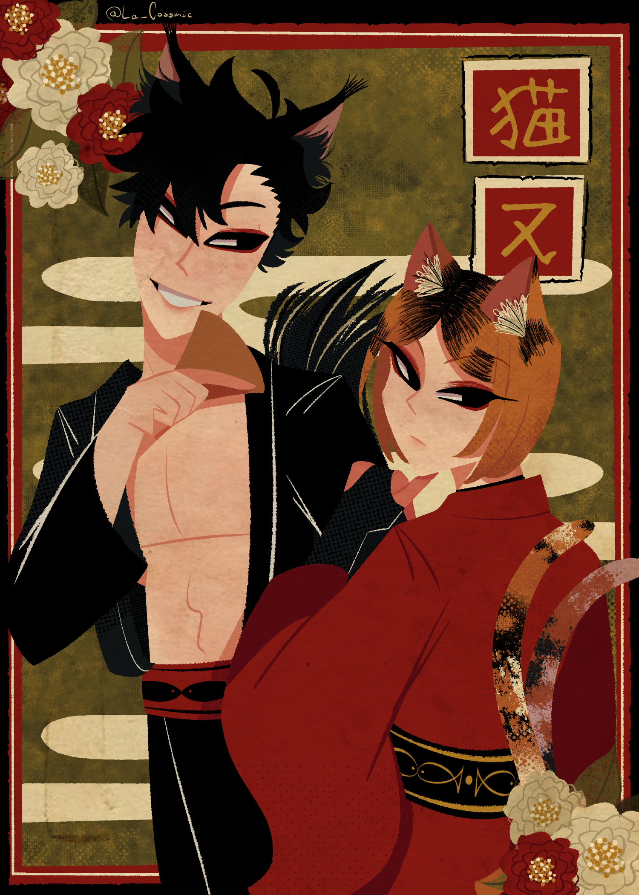

Dibujo
Me gusta mucho dibujar, no me relaja, pero lo disfruto mucho
Practicamente llevo toda mi vida dibujando, no he vivido un día sin el dibujo
Creo que tengo muchas inspiraciones a la hora de dibujar, pero las principales serian:
Las CLAMP
Las ilustraciones retro (especificamente las de Mary Blair)
El estilo grunge y punk
- El estilo de las caricaturas del y2k.
En general, me gusta mucho simplificar y geometrizar las cosas.
Mi cerebro no se funde tan rápido de esa forma
Adjunto ejemplos de lo que soy capaz de hacer
